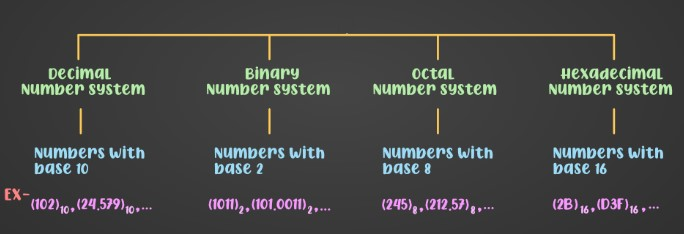
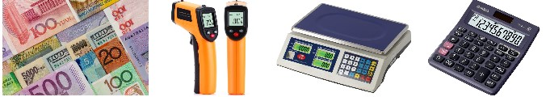
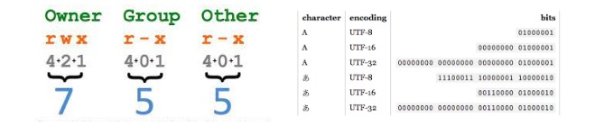
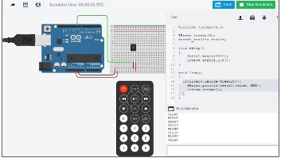
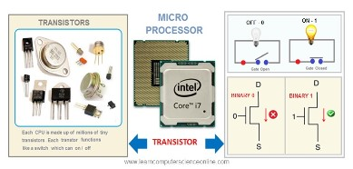

Number System
The number system has different bases, and the most common of them are decimal, binary, octal, and hexadecimal.

Decimal Number
Most common number system used by humans because it is based on the number 10 (the number of fingers on our hands).

Octal Number
Base-8 that uses in digital electronics where it is used to represent groups of three binary digits.

Hexadecimal Number
Base-16 number system that uses 16 digits to represent numbers, from 0 to 9 and A to F.

Binary Number
Base-2 number system that uses only two digits, 0 and 1, to represent numbers
